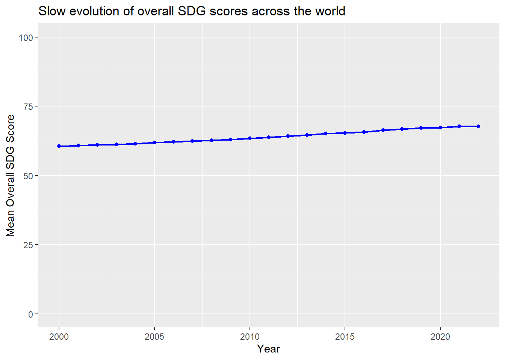
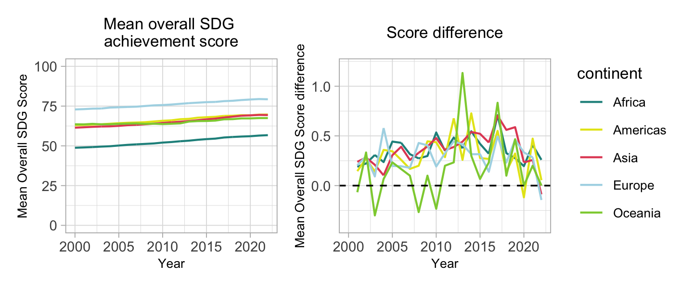
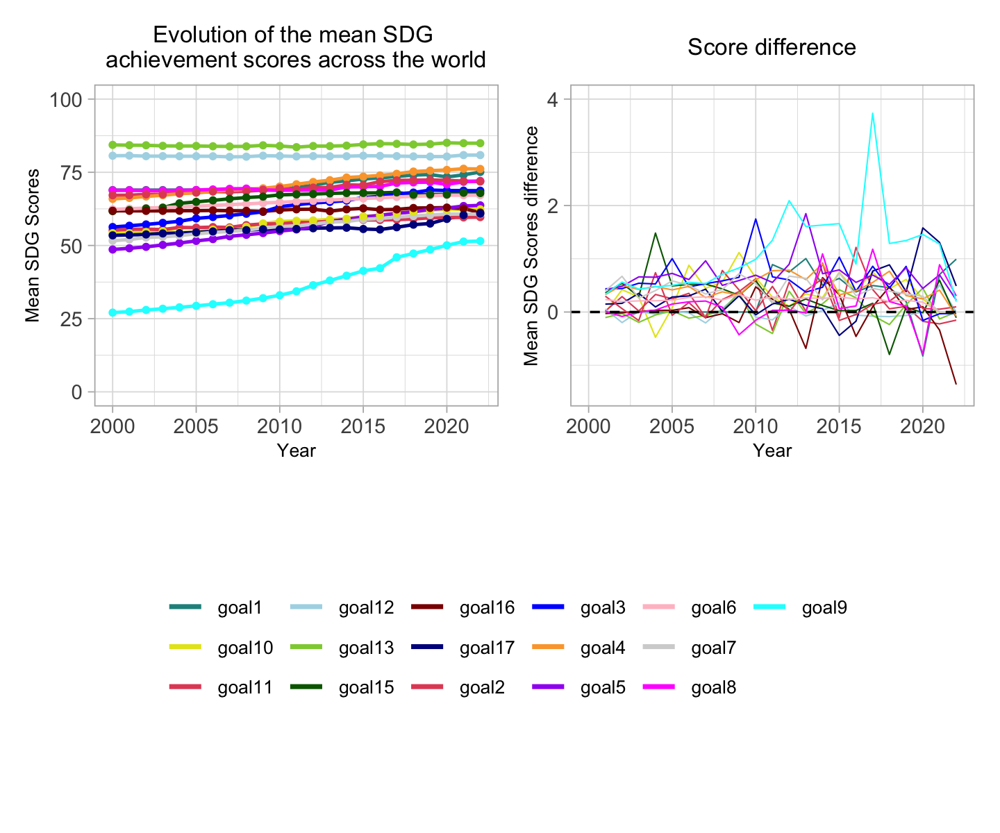
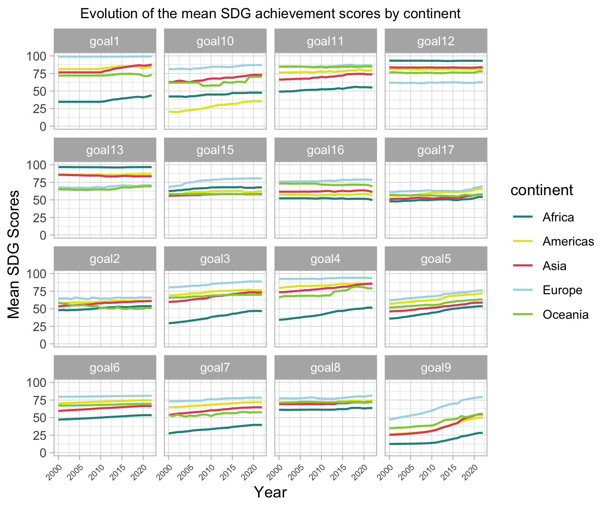
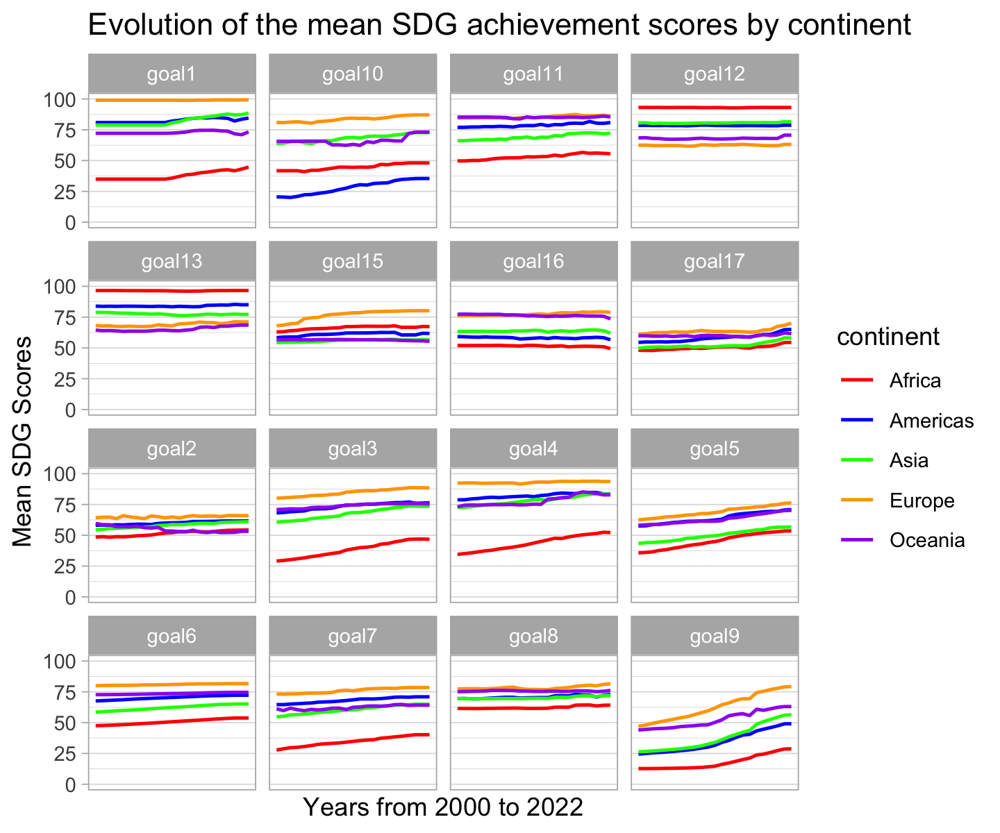

data_question2 <- read.csv(here("scripts", "data", "data_question24.csv"))
data_question2 <- data_question2 %>% select(-X)Question 2: Focus on the evolution of SDG scores over time
General time evolution of SDG socres
First, we look at the evolution of SDG achievement overall score over time for the whole world, by continent and by region.
data1 <- data_question2 %>% group_by(year) %>%
mutate(mean_overall_score_by_year=mean(overallscore))
ggplot(data1) +
geom_line(mapping=aes(x=year, y=mean_overall_score_by_year), color="blue", lwd=0.8) +
geom_point(mapping=aes(x=year, y=mean_overall_score_by_year), color="blue", lwd=1.5) +
scale_y_continuous(limits = c(0, 100)) +
labs(title = "Slow evolution of overall SDG scores across the world",
y = "Mean Overall SDG Score",
x = "Year"
)
The general evolution of SDG scores around the world is increasing over the years, but very slowly.
data2 <- data_question2 %>% group_by(year, continent) %>%
mutate(mean_overall_score_by_year=mean(overallscore))
ggplot(data2) +
geom_line(mapping=aes(x=year, y=mean_overall_score_by_year, color=continent), lwd=0.8) +
geom_point(mapping=aes(x=year, y=mean_overall_score_by_year, color=continent), lwd=1.5) +
scale_y_continuous(limits = c(0, 100)) +
labs(title = "Evolution of the mean overall SDG achievement score by continent",
y = "Mean Overall SDG Score",
x = "Year"
)
Looking at the continents, we see that Europe is above the others, while Africa is below, but in general, all have increasing overall scores.
data3 <- data_question2 %>% group_by(year, region) %>%
mutate(mean_overall_score_by_year=mean(overallscore))
ggplot(data3) +
geom_line(mapping=aes(x=year, y=mean_overall_score_by_year, color=region), lwd=0.8) +
geom_point(mapping=aes(x=year, y=mean_overall_score_by_year, color=region), lwd=1.5) +
scale_y_continuous(limits = c(0, 100)) +
labs(title = "Evolution of the mean overall SDG achievement score by region",
y = "Mean Overall SDG Score",
x = "Year"
)
This view that groups the countries by region gives us precision about the previous information. Indeed, it is Western Europe that is particularly above and Sub-Saharan Africa that is clearly below.
Second, we look at the evolution of SDG achievement scores(16) over time for the whole world, by continent and by region.
data4 <- data_question2 %>%
group_by(year) %>%
summarise(across(starts_with("goal"), mean, na.rm=TRUE)) %>%
pivot_longer(cols = starts_with("goal"), names_to = "goal", values_to = "mean_value")
color_palette <- c("red", "blue", "green", "orange", "purple", "pink", "brown", "gray", "cyan", "magenta", "yellow", "darkgreen", "darkblue", "darkred", "darkorange", "darkcyan")
ggplot(data = data4) +
geom_line(mapping = aes(x = year, y = mean_value, color = goal), size = 0.7) +
geom_point(mapping = aes(x = year, y = mean_value, color = goal), size = 1) +
scale_color_manual(values = color_palette) +
scale_y_continuous(limits = c(0, 100)) +
labs(title = "Evolution of the mean SDG achievement scores across the world",
y = "Mean SDG Scores",
x = "Year"
) +
guides(
color = guide_legend(
ncol = 2, # Number of columns
title.position = "top", # Position of the legend title
title.hjust = 0.5 # Horizontal justification of the legend title
)
)
Here, by looking at the SDGs individually, we notice that all SDGs except from goal 9 (industry innovation and infrastructure) are close to one another in terms of level and growth. Goal 9 starts far below the others in 2000 and growths faster until almost exceeding 50%.
ggplot(data = data4) +
geom_line(mapping = aes(x = year, y = mean_value), size = 0.7) +
scale_color_manual(values = color_palette) +
scale_y_continuous(limits = c(0, 100)) +
labs(title = "Evolution of the mean SDG achievement scores across the world",
y = "Mean SDG Scores",
x = "Year"
) +
facet_wrap(~ goal, nrow = 4)
In contrast to the aspect discussed in the precedent graph, this graph shows us the same information in a different way and it pops out that some goals did not increase their scores much in the last two decades, for example goal 13 (climate action) and goal 12 (responsible consumption and production).
data5 <- data_question2 %>%
group_by(year, continent) %>%
summarise(across(starts_with("goal"), mean, na.rm=TRUE)) %>%
pivot_longer(cols = starts_with("goal"), names_to = "goal", values_to = "mean_value")
color_palette <- c("red", "blue", "green", "orange", "purple", "pink", "brown", "gray", "cyan", "magenta", "yellow", "darkgreen", "darkblue", "black", "darkorange", "darkcyan")
ggplot(data = data5) +
geom_line(mapping = aes(x = year, y = mean_value, color=continent), size = 0.7) +
scale_color_manual(values = color_palette) +
scale_y_continuous(limits = c(0, 100)) +
labs(title = "Evolution of the mean SDG achievement scores by continent",
y = "Mean SDG Scores",
x = "Years from 2000 to 2022"
) +
facet_wrap(~ goal, nrow = 4)+
scale_x_continuous(breaks = NULL)
Now, comparing the SDG scores by continent, we observe that most of the time, Europe is at the top of the graph and Africa at the bottom, exept for goals 12 and 13 that are linked to ecology. Some other information stand out:
Americas are far behind the other parts of the world regarding goal 10: reduced inequalities.
Africa is far behind the other continents (even if becoming better) for goals 1, 3, 4 and 7.
Goal 9 (industry, innovation and infrastructure) show exponential growth for almost all continents.
Third we create an interactive map of the world to be able to navigate from year 2000 to 2022, seeing the level of achievement of the SDGs (overall score) for each country. To open it in your browser, use this R file: interactive_map_1. Here is only a non-interactive world map of the overall SDGs achievement scores, not taking into account the evolution over the years.
library(rnaturalearth)
library(tidyverse)
library(sf)
# Load world map data
world <- ne_countries(scale = "medium", returnclass = "sf")
# Merge data with the world map data
data0 <- merge(world, data_question2, by.x = "iso_a3", by.y = "code", all.x = TRUE)
data0 %>%
sf::st_transform(crs = "+proj=robin") %>%
ggplot() +
geom_sf(color = "lightgrey") +
geom_sf(aes(fill = overallscore), color = NA) +
scale_fill_gradientn(
colors = c("darkred", "orange", "yellow", "darkgreen"),
values = scales::rescale(c(0, 0.25, 0.5, 1)),
name = "Overall Score",
na.value = NA
) +
labs(title = "Mean overall SDG achievement score by country")+
coord_sf(datum = NA) +
theme_minimal()